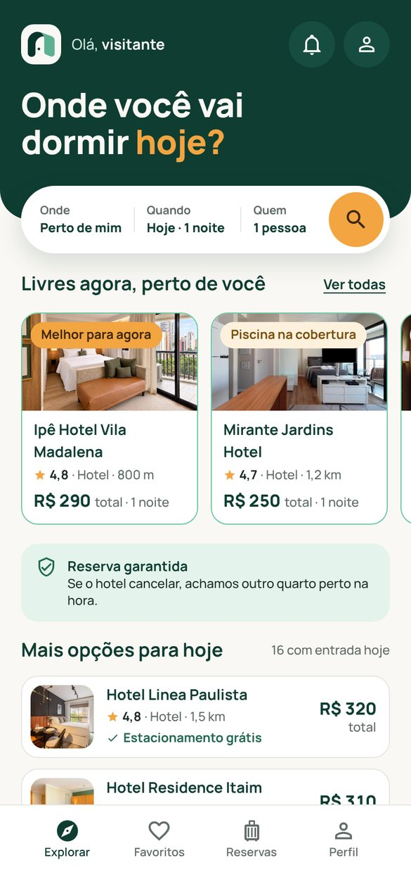
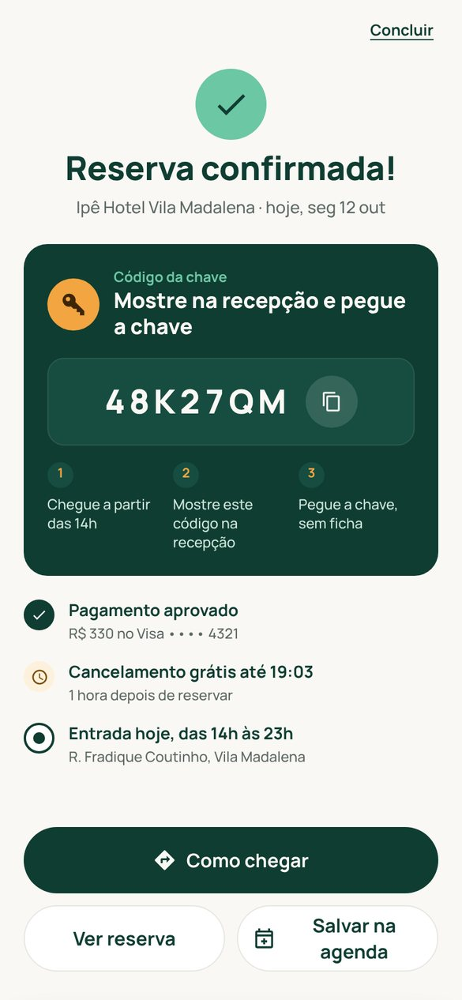

Kaique Martins · Designer de UX/UI
Design que começa nas pessoas.
Cada decisão que eu tomo nasce de algo real: um dado, uma conversa, uma dor de quem usa.
Projetos selecionados
01–02


Roomio
Um app para reservar hospedagem para hoje, com preço total desde o primeiro card e check-in sem fila.


Onde um e‑commerce perdia vendas no celular
Cruzei GA4, Clarity, teste de uso e heurísticas, achei dois bloqueios na compra e entreguei um handoff para cada um.
Sobre mim
10 anos no Itaú me ensinaram a entender pessoas. Hoje eu desenho para elas.
Sou o Kaique, designer de UX/UI júnior em São Paulo. Antes do design, passei 10 anos no Itaú como Especialista de Investimentos Pleno, atendendo clientes pessoa física de média e alta renda em investimentos e crédito consignado.
Dessa experiência eu trago para o UX:
- Contato direto com o cliente final: 10 anos e milhares de conversas entendendo a necessidade real por trás de cada pedido.
- Negociação com stakeholders: alinhamento com gerentes, áreas de produto e superintendentes para chegar a uma solução boa para o cliente e para o banco.
- Conhecimento técnico do mercado financeiro: renda fixa, renda variável, derivativos, fundos, previdência, gestão de risco de portfólio e macroeconomia, e o hábito de traduzir o complexo em linguagem simples.
No design, trabalho com pesquisa, dados e teste de usabilidade, e uso IA no processo: no Roomio, usei o Claude para construir o protótipo navegável, organizar o Figma e as transcrições do teste, com as decisões de produto e de interface sempre comigo.
Fora do trabalho, o Charlie, meu cachorro, segue sendo o meu usuário mais exigente.
Como eu trabalho
-
01
Entender o problema
Entrevistas, questionários, dados e objetivos do negócio, reunidos numa visão clara do que precisa ser resolvido.
-
02
Estruturar a experiência
Fluxos, jornadas e arquitetura de informação antes de qualquer tela.
-
03
Desenhar com consistência
Interface, design system com estados e acessibilidade como requisito, não como ajuste final.
-
04
Testar e evoluir
Testes de usabilidade, iteração com base no que aparece e handoff bem documentado para o time.